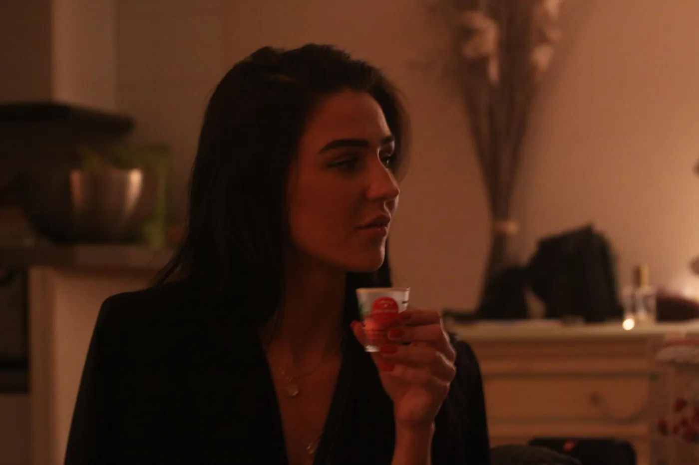
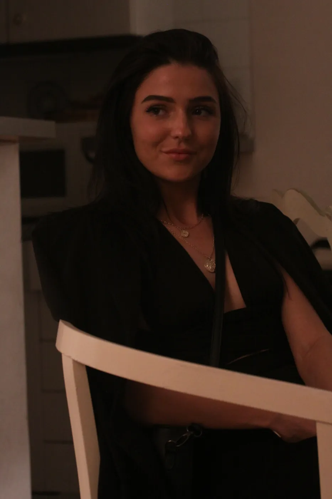

PORTFOLIO
Un soir entre amis
À fleur de nacre
Sous le rouge, à dessein
Isis à demi dévoilée
Le temps d’une pose
La nuit lui appartient
Pink Flow
La chambre des lianes
ABOUT
CONTACT
FR
EN
IT
Un soir entre amis
À fleur de nacre
Sous le rouge, à dessein
Isis à demi dévoilée
Le temps d’une pose
La nuit lui appartient
Pink Flow
La chambre des lianes
About
Contact
FR
EN
IT
Series 1 / 8
Un soir entre amis
Cannes, 2018


← Previous series
La chambre des lianes
Next series →
À fleur de nacre